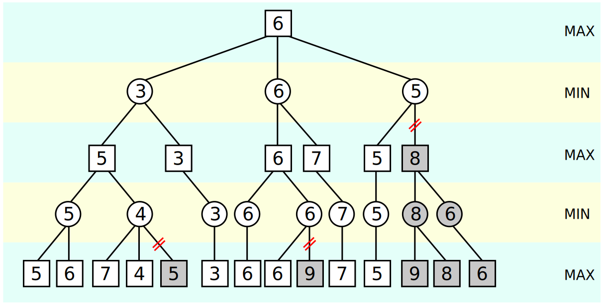

GoBang (Five in a row)
A kind of board game project
By Jingkai Zhang (jz544) & Lanyue Fang (lf355).
Demonstration Video
Project Objective:
-
GoBang is an easy but interesting chess game, it is uneasy to find someone to play with you, either your friends are busy or his/her skills are not as good as yours. Although a lot of virtual online GoBang games are available on the Internet, they can only be displayed on the screen and cannot provide the feeling of touching the chess pieces, which is also a vital part of playing chess. Therefore, our aim is to combine the software with hardware, so that people can not only play chess on the real chessboard with the real chess pieces but also play with a powerful AI that never gets tired. In addition, people can also practice their chess skills and prepare for the chess match.
Introduction
GoBang is also named Gomoku, five in a row. This board game looks like Go but the rule of it is much easier since it does not require any additional movements, the only thing that can trigger the end of the game is that one of the sides (white or black) owns five continual connected stones, as shown in the figure below. Because of its easy rules, this game is popular around the world, from normal recreation to professional world’s match. People can play it not only on a real board but also on a piece of paper with a pencil. Researchers used well-designed algorithms and powerful computers to explore the GoBang even further, they found that the first player has a higher win rate. In 1994, L. Victor Allis proved that the first player can always win on a 15x15 board[1].
Design and Testing
Hardware Design
The physical design of the GoBang is a three-axis movable frame. Here are some photos.
For this, we adopted the RPi Printer built by Kaichen Wei(kw573) Neo Yuan(zy393) in 2019 Fall as our basic frame. A Pi Camera is mounted on the top and an air pump is equipped to suck the chess. The machine broadly consists of the following parts: a Raspberry Pi with the PiTFT, a Pi Camera, 5 stepper motors, an air pump, breadboard circuit with pump driver, and a wooden chassis with chessboard.
The motor is named 28BYJ-48 - 5V Stepper Motor. There are five motors in total, two for each of x and y axis, one for z axis. Each motor is connected to a driver with four wires to transmit the pulse and thus each axis requires 4 GPIO Pins to control the direction. The GPIO connection is consistent with the previous RPi Printer project. You can check their website for details.
The air pump is supplied by +5V power and controlled by the TB6612FNG motor driver, the one we used in Lab 3. We set the AIN1 and AIN1 to a fixed value of 3.3V and ground respectively. The PWMA channel of the driver is connected to GPIO 26 on the Raspberry Pi to run the pump. 50 Hz frequency and 50% duty cycle are used. A suction cap is attached at the end of the silicone tubing to increase the contact area with the go stone.
Software Implementation
■ GUI implementation
The game GUI is implemented with pygame library, and we also used some useful libraries that were developed in ECE5725 Lab3 such as button class, caption class to reduce our workload. The code can be found in the project file ECE5725-Final-Project/GoBang/, which is available on GitHub, see the link in Code Appendix. The image materials that we used were in the “resources” file, including the title image, black and white chess stone. Note that the chess stone was created by using the drawing tool from Windows, and the title with the special font was generated by using the online website https://www.qt86.com/. Figure below shows the game GUI of GoBang for this project.
Here is the structure for this GUI.
-resources (folder)
-black.png #black stone display image
-gobang_title.png # GUI title “GoBang for ECE5725”
-white.png #white stone display image
-Config.py
This file sets all parameters of the GUI, including width, height, cell size, margin, etc.
-gobang_AI.py
Implementation of AI
-GUI.py
Caption # the caption class which configures a caption in pygame display
-__init__: initializes the position, font, text content of the caption
-display: display the caption on the screen
-change_text: change the text content of the caption
Button # the button class which configures a button in the pygame display
-__init__: initializes the position, font, text content of the button
-change_color: change the background color of the button
-add_call_func: add a callback function for the button
-display: display the button on the display
-is_on_button: check if the mouse is on the button
GoBang_GUI # the GUI class that sets all the elements in the game
-__init__: load all the resources and elements in the screen display
-read_chessboard: get the latest value of identify_finished_flag
-draw_pieces: draw all chess stones on the display
-refresh: refresh the display
-mouse_on_button: check if the mouse is on the button
-mouse_click: deal with the action after mouse clicked on chessboard and buttons
-Human: update information related to the black stone
-Robot: update information related to the white stone
-draw_text: display the text on the screen
-run: start to run the GUI
-log.py
Logging system
-Rules.py
-win_judgement: judge if the human or robot win
■ How does AI generate the new step?
The approach we used is named the min-max search tree.
As demonstrated in the figure, the rectangle represents the black piece and the triangle stands for the white piece. We will take the black color as an example. Every step can be expressed as a layer, for example, the number of possible steps for the white piece in layer two is 8, however, only two cases were shown in the figure. All possible steps will be considered from up to down. For the layer with the rectangle, the algorithm should consider the best step for black, for instance, the step that can connect more black pieces will obtain higher scores. Each step will be evaluated and a score will be given. When it turns to the white turn, the algorithm will consider the step that achieves the lowest step for black. This process will keep rotating until all the steps are traversed. After that, the total score for each branch will be calculated, and the maximum score for black will be selected to generate the new step.
However, the biggest problem with this approach is that the computation quantity grows exponentially once the depth of the tree grows linearly. For Raspberry Pi 4B, if we set depth as 3 for an 18x18 size chessboard, it would take more than 5 minutes to generate a single step, which is too slow. But our demo chessboard only has 9x9 size, depth 3 can still respond in a few seconds. One way to reduce the useless computation is to imply alpha-beta pruning, the basic idea of it is expressed in the figure below.

For the search tree, the default order is from left to right. Take the gray 5 in the last line as an example, we first search the left subtree that contains 5 and 6; 5 will be selected since this is the “min” layer, and the upper MAX layer will temporarily set as 5; Now turn to the right subtree that includes 7,4,5; 7 will be first assigned to the MIN layer, which means the value in this MIN layer will be less than or equal to 7; when it comes to 4, the value of MIN layer is updated since 4 is smaller than 7, and the value of the MIN layer will be less than or equal to 4; Now we know that the MAX layer need to find a greater value between 5 and right subtree, the value of right subtree is less or equal to 4, which is definitely smaller than 5, therefore, there is no need to verify the third subtree at the bottom[2].
■ Communication between two programs
In our project, the game GUI and the physical control program are separated, in other words, 2 Python programs are running simultaneously. In the beginning, we tried the multi-process and multi-thread Python library, both of them can run GUI and physical control in a single program, however, the speed is slowed down. A noticeable bigger delay occurs in camera preview shows that multi-process is not suitable for 2 real-time tasks which all include a while loop. We suspect it may be different by running 2 tasks in a single program with multi-process and running 2 tasks in 2 console windows, the CPU dispatch methods should be different, the latter one shall achieve a faster response.
So, what can we do, if two tasks share some common variables, but requires a fast real-time response at the same time? Our idea is to build the communication channel between 2 running programs to read or write the variables, and each program starts a thread or timer interrupt to update the variables in the file. Here, we recommend using either “.json” or “.pickle” type files, this is because both of the types are able to save tuple, dictionary, and any other common variable types. The advantage of “.json” is that this type is also supported by other languages, which means it has better compatibility; while “.pickle” is only supported by Python, however, you can even save class and function in this kind of file, which is unavailable in “.json”.
Next, two basic operations, read and write are implemented by the following function. The example is based on Python and “.json”, but for other types of files such as “.txt”, the code is almost the same .
import json def read(file_name): with open(file_name,'r') as json_file_handle: info = json.load(json_file_handle) return info def write(file_name,key,value): cur_info = read(file_name) cur_info[key] = value with open(file_name,'w') as json_file_handle: new_info = json.dumps(cur_info) json_file_handle.write(new_info)
The code shows how to read or change a Python dictionary.
However, we also encountered a problem that occasionally happens. When the file is being written by program A, program B starts to read the content, the error will occur, it’s called json.decoder.JSONDecodeError. The reason for this error is that the action write will first clear the content of the file, and then add the new information to it. The write action will take some time so the file remains empty for a few time periods, which causes the error for reading at this time. A quick solution would be using the “try-except” struct in Python to resolve this problem, the sample code is as follow.
import json try: read() # read the json file except json.decoder.JSONDecodeError: print("reading error, program will read again")
■ How to put the go stone accurately?
One of the challenges that we met was how to reduce the position error generated by the step motors. Unlike the servo motor or other advanced motors that have integrated closed-loop control or feedback encoders, the step motors we used do not provide either of them.
The tme that the step motor runs will be calculated and directly input to it, this open-loop control strategy might work in the first few times, but soon the error will accumulate. Since the motor needs to move a lot of times to place the chess stone in the corresponding position, the error will be too big, and the chess stone will be wrongly placed on the chessboard. Besides, the wrong position of the chess stone also affects the other chess stones that have already been in their correct place, which causes problems in chess identification.
Therefore, we decided to apply closed-loop control to the step motor so that higher accuracy could be achieved.
Red Circle Track:
What we did first was to install a pi camera on the top of the chessboard to watch everything, and a red dot was put above the picker so that we can locate its position in real-time by identifying the coordinate of the red circle center.
Images are changed into the HSV (for hue, saturation, and value) color space first to segment the red region and then Circle Hough Transform (CHT) is used to get the circle center position. However, light and shadow can easily influence the result. A tricky problem we encountered is that the surface of the red circle is smooth and can reflect the light. When we transfer it into the gray image, the area that reflects light can always be regarded as white, which makes CHT hard to detect the circle.
We tested different kinds of prototypes as shown below, and we found that the rough surface is extremely important since it will diffuse reflect the light. Besides, we found that the white background is also essential. The detection result becomes more stable with a white background because it offers a higher contrast ratio.
Our final plan is like this. A pi camera adjuster combined with a white paper with a red circle already drawn on it. Our test shows that this achieved the best detection performance. Morphological filtering opening, first erosion, and then dilation is also used to remove the noises.
Here is a figure that compares the identification result on our final version (on the left) and the previous version (on the right). It could be seen that our final version can be better detected as a circle.

Calibration Strategy:
Our calibration strategy can be divided into two aspects: (1) Make fine adjustments at the target location so that the go piece can fall in the center of the chessboard grid. (2) Go back to the origin after each pickup and calibrate the position to prevent error accumulation. Therefore, the origin position and all 81 grid center positions should be stored in the initialization. However, given that the red circle is kind of big and near to the camera, it will go outside the transformed image in some specific places. To be specific, when the sucker is above the first two columns or the last row, the red circle is unable to be detected. For those points, calibrations will be done at the transition points first, then the motor will move one or two blocks to reach the target position. For example, to get the (1,3), motors will go to (3,3) first, calibrate, and then x-axis will move 2 blocks to reach the (1,3).PID control with picker:
We set the error threshold as 1.5 pixels. Hence, it is necessary to do several calibrations. To make the motor move smoothly, proportional-integral-derivative control (PID for short), is used in the calibration stage.
We do not include full PID control since we do not know the transfer function of the step motor. Besides, the test results indicated that P control is accurate enough. The P (proportion) control system is designed as follows. To explain it, the r(t) is the target position that we want it to reach, e(t) is the error calculated from the target value and actual value; K_p is the proportion control parameter, and u(t) is the output running time that is assigned to the step motor; y(t) is the actual position.
■ Flow chart of the program
For our Gobang game, human players are going to play black first and press the button to tell he/she has finished. Once the button is pressed, the pi camera will take a picture to identify the new black piece. Our AI algorithm is able to calculate the best step for white in seconds. After that, the air pump will pick up a white stone and take it to the target position. Motors will adjust serval times to locate the piece more accurately. The flow chart of our program is shown as follows.

■ Logging System
Our mini logging system is implemented by using “datetime”, “os”, library. The code can be found in the project GitHub link, ECE5725-Final-Project/log.py. The logging has 5 levels, namely, debug, info, warning, error, critical. In our project, the general information such as the new step is detected and the picker has moved to the destination use the info level; the debug level is used to print information like the position of the red circle; the error level can be used to indicate that file reading failed; if the pi camera fails to open, the critical level will be used. By categorizing logging information into several levels, we know whether the system is working fine or any fatal error happens. Here is the logging generated from demonstrating the system, it can also be found in the “logging” folder.
2021-12-12 14:06:54.393652 [INFO] logging saved in ./logging/2021-12-12_system.log
2021-12-12 14:06:54.395319 [INFO] GoBang starts now
2021-12-12 14:06:54.432027 [INFO] Hardware has been initialized successfully.
2021-12-12 14:06:54.434840 [INFO] calibration points have been loaded
2021-12-12 14:06:54.446855 [INFO] Control flags has been initialized
2021-12-12 14:06:54.482595 [INFO] Start the flag reading timer
2021-12-12 14:06:54.484239 [INFO] Waiting for human to place chess stone
Result
In our demo, our initial objective is achieved very well, the machine can identify what exactly a human puts on the board with the accurate result and fast response; the step will be recorded and understood by AI to generate the new steps, then the plant can successfully pick up a go piece and move to its destination with relatively accurate correction and calibration. During our test, the AI performs well and can always generate defensive steps to prevent us win. The game GUI looks fancy and all the buttons on it worked, GUI is capable of displaying the board and the go pieces, and also showing the order of each step. Our improved red circle is easy to be detected by using Holf transform, and the moving strategy to deal with the situation when the red circle is out of region worked well. In terms of AI, we found that the speed boosts exponentially if the size of the board mitigates (from 18x18 to 9x9). Also, the alpha-beta cutting strategy can reduce up to 50% calculation time, but it improves very little when the board is small (9x9). However, we also find that the z-axis performs not stable enough, sometimes it performs the idle rotation, resulting in the fact that the suction cup is not close to the go piece or the lifting height is not higher enough. These failure cases happen occasionally, we need to correct them manually in order not to influence the other go pieces.
Conclusions
During our project, we encountered a lot of hardware and software problems and bugs, and most of them are fixed. In terms of circle detection using OpenCV, we recommend using the color red, blue, or green, because these colors are easy to filter out by transferring BGR images into HSL or HSV and setting a suitable threshold. Another important tip is to make the surface of the circle as rough as possible since the light can be reflected if the surface is smooth, once the light from the lab or environment is reflected too much, the circle will contain a small white area which causes trouble for detecting circle. Also, try to add a white background or any other pure color background for the circle, this would help to filter out the noise and enhance the contrast rate. For step motor control, feedback control is more smooth and accurate than open-loop control. However, the step motor we used does not provide encoder feedback, thus we use the camera to detect the position of the red circle, and compared it with the ideal position to obtain the error. This is accurate enough for playing the board game, but not enough for tasks that require a lower deviation. If the task requires higher accuracy, we would recommend using servo motors instead. Besides, we also found that the machine learning method in playing GoBang may not achieve better performance over the traditional method. The machine learning method requires a well-designed model and massive training, which is more suitable for someone who has experience in it. Last, a system that has over 1000 thousand line codes needs a log system to record the information when running it, it would be useful to locate the bug and solve it.
Future work
As described in the result, our current system works fine and can play with humans very well. But there still exist some problems or improvements that can be done in the future. The z-axis is not working well, it often does idle rotation because the gear bite is not strong enough. Therefore, the z-axis could be improved by using different lifting and declining approaches since the step motor combined with a belt attached to a pencil is not smooth enough, sometimes it can even be stuck. Besides, the current system still requires humans to place a white piece on the calibration point, which is not cool enough. In the future, we hope it can automatically pick up a go piece from the piece pool, human action is no longer involved. For AI, machine learning can be used to enhance AI’s ability, so it will be more challenging and interesting. In addition, the game can be online so that we can play with friends as if your friend is sitting in front of you picking up go pieces.
Work Distribution
Project group picture
Jingkai Zhang
jz544@cornell.edu
Designed the software architecture, implment game GUI/AI, logging, board identification, project code management.
Lanyue Fang
lf355@cornell.edu
Tested the overall system, wiring & soldering, calibration algorithm design, image processing, step motor control.
Budget
- Raspberry Pi Provided in lab
- Raspberry Pi Camera V2 Provided in lab
- Suction cups $9.49
- Air pumps, silicone tubing, ups ground $30.37
- Wires, Resistors and Frame - Provided in lab
Total: $60.85
References
[1] “Gomoku,” Wikipedia. Dec. 09, 2021. Accessed: Dec. 14, 2021. [Online]. Available: https://en.wikipedia.org/w/index.php?title=Gomoku&oldid=1059387439[2] “Alpha-beta pruning,” Wikipedia. Oct. 19, 2021. Accessed: Dec. 14, 2021. [Online]. Available: https://en.wikipedia.org/w/index.php?title=Alpha%E2%80%93beta_pruning&oldid=1050683106